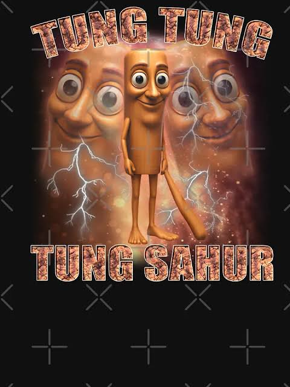

Tung Tung Tung Sahurs historia

Vem är Tung Tung Tung Sahur?
Tung Tung Tung Sahur är en AI-genererad karaktär som blev viral på TikTok och YouTube under 2025. Han är en del av den så kallade "Italian Brainrot"-trenden där märkliga figurer kombineras med humor, skräck och överdrivna berättelser.
Figuren ser ut som en träliknande varelse med ett stort basebollträ. Han dyker upp tillsammans med en berättarröst som beskriver hur han visar sig för personer som ignorerar uppmaningen att vakna till sahur.
Historien
Enligt berättelsen ska man alltid vakna när någon ropar att det är dags för sahur. Om man ignorerar tre uppmaningar sägs Tung Tung Tung Sahur dyka upp. Historien är helt påhittad och används som en humoristisk skräckberättelse på internet.
Efter att de första videorna blev populära började människor skapa egna versioner med nya historier, animationer och musik. På kort tid blev Tung Tung Tung Sahur en av de mest kända Brainrot-karaktärerna.
Varför blev han populär?
- Rolig kombination av skräck och humor.
- AI-genererade bilder och röster.
- Lätt att skapa egna versioner.
- Spreds snabbt på TikTok och YouTube.
Video
I videon nedan berättas historien bakom Tung Tung Tung Sahur och internetfenomenets resa.
Sammanfattning
Tung Tung Tung Sahur började som ett internetmeme men utvecklades snabbt till en av de mest kända figurerna inom AI-genererad internetkultur. Kombinationen av humor, mystik och kreativa videor gjorde att miljontals människor lärde känna karaktären.